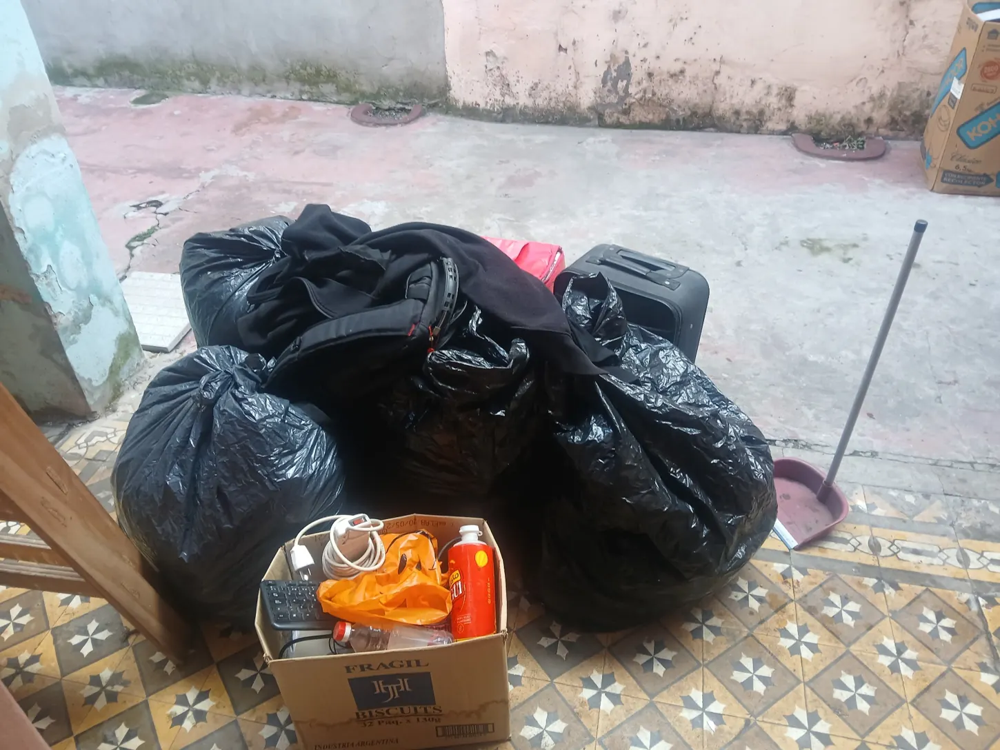

Banco Galicia
Titular: Cayetano Raúl Benítez
caye2000Me llamo Caye. Trabajé casi 11 años en Piegari, tuve mi casa en Ramos Mejía y después atravesé situaciones que nunca imaginé. Hoy estoy en Villa La Angostura, todavía intentando recuperar estabilidad.
Antes de pedir apoyo, quiero mostrarte mi historia, mi experiencia y los proyectos reales en los que sigo trabajando.


«No sé cómo termina esta historia. Sé que todavía estoy intentando escribirla».
No voy a mostrarte solamente la parte difícil, ni a pedirte que sientas lástima. Quiero contarte lo que construí, lo que perdí, cómo viví después y por qué trabajar hoy todavía no alcanzó para salir adelante.
Las fotografías y los videos son reales. Cada uno acompaña la etapa a la que pertenece.
Durante casi 11 años trabajé en Piegari Carnes & Ristorante, en Buenos Aires. No fue un trabajo de paso: era mi rutina, mi responsabilidad y una parte enorme de mi identidad. Me ocupaba de cajas, cierres, administración, conciliaciones y del funcionamiento de sistemas.
En Ramos Mejía tenía un hogar que había armado de a poco. Una heladera, un televisor, muebles, una cama, objetos que se compran trabajando y que van convirtiendo una casa en algo propio.
Quizás desde afuera eran cosas comunes. Para mí representaban años de esfuerzo. Y por eso importa contar cómo era mi vida antes de todo lo que vino después.
Este video en blanco y negro fue grabado en Café García, Villa Devoto. Es un recuerdo de otra etapa de mi vida.
Perder la estabilidad no fue solamente quedarse sin trabajo. Fue empezar a ver cómo se desarmaba una vida que había tardado años en construir.
Un rematador se llevó mis pertenencias. Todavía me cuesta poner esa escena en palabras. Había comprado esas cosas con trabajo y, de pronto, ya no estaban.
Lo que viene después no es una recreación ni una metáfora. Son fotos de lo que quedó.
«De pronto, lo que había sido mi casa empezó a caber en bolsas.»
En Laferrere, muchas de mis pertenencias terminaron afuera: bolsas negras, ropa, calzado, objetos sueltos sobre el suelo y el pasto.
Me quedé en la casa de mi hermana. Ahí dormía sobre un colchón en el piso. No había un cuarto propio armado como antes, ni la certeza de lo que iba a pasar después.
Hay una foto de ese colchón que todavía me dice más que cualquier frase. No la muestro para causar pena. La muestro porque realmente dormí ahí.


Después vino una etapa difícil en Villa del Parque. Una habitación deteriorada, piso de cemento, una cocina gastada y una sensación constante de estar viviendo de prestado, de manera provisoria.
En algunas imágenes se ven los muebles, las cosas sobre baldosas y las condiciones en las que intentaba organizar mi día. Hubo momentos en los que ni siquiera tenía comida.
En ese momento grabé un video mostrando esa realidad. No necesitaba un discurso elaborado: alcanzaba con mirar alrededor.



Este video a color lo grabé en Villa del Parque, mostrando lo que me estaba pasando.
En medio de esa incertidumbre apareció una posibilidad de trabajo en Villa La Angostura. Me dijeron que fuera. Pensé que podía ser una forma de recuperar estabilidad y empezar otra etapa.
No viajé para hacer turismo ni para contar una historia de éxito. Viajé porque necesitaba volver a construir una vida.
Una valija no resuelve lo que uno lleva encima. Pero a veces es el primer paso para moverse.

Vine a Villa La Angostura con ganas de trabajar, aprender y hacer algo importante. Empecé a ocuparme de administración, proveedores, compras, pagos, reportes y también de resolver problemas técnicos.
Desde afuera, el paisaje parece una postal. Y sí, es hermoso. Pero mudarse a un lugar hermoso no borra deudas, inseguridades ni el cansancio acumulado.
Seguí apostando al trabajo. Seguí tratando de dar lo mejor. Lo difícil es que trabajar mucho no siempre significa poder estar bien.
Estos videos muestran las montañas y caminos que hoy me rodean.
Este es el punto que más me cuesta explicar. Si alguien ve que tengo trabajo, puede pensar que ya está todo resuelto. Pero tener un ingreso no significa estar en condiciones de reconstruirte.
Estoy atravesando una situación laboral de mucha presión, tensión y desgaste. Hubo momentos en los que me sentí desbordado y hasta una suspensión que me hizo replantear dónde quiero estar. No voy a usar esta página para señalar ni nombrar a nadie. Solo quiero que se entienda lo que estoy viviendo.
Al mismo tiempo, sigo buscando oportunidades administrativas y tecnológicas, intentando aprender, crear y salir del lugar en el que estoy. No tengo una respuesta definitiva: no sé si voy a poder quedarme acá o si voy a necesitar volver a Buenos Aires.
Y hay algo todavía más concreto: necesito atención odontológica para arreglar un diente dañado que vengo postergando. Es una necesidad visible y real, no una frase que puse para pedir dinero.
![Fotograma personal mostrando un diente que necesito reparar]() MI SITUACIÓN REAL
MI SITUACIÓN REALLa fotografía es real. No es un diagnóstico ni un presupuesto odontológico: muestra la situación que quiero empezar a resolver con atención profesional.
Porque tener un trabajo hoy no me devuelve automáticamente la estabilidad que perdí. Y no sé cuánto tiempo más voy a poder sostener esta situación sin cambiar de rumbo.
Vivo en Villa La Angostura, lejos de gran parte de mi historia. Estoy pasando por una etapa laboral muy desgastante, con mucha presión e incertidumbre. Necesito poder tomar decisiones sin estar siempre al límite.
Lo que busco no es que otra persona viva mi vida por mí. Quiero tener un margen para cuidar mi salud, seguir buscando trabajo y elegir si puedo quedarme acá o regresar a Buenos Aires.
También quiero que puedas ver algo más que mi pedido de ayuda: mi trabajo, lo que aprendí y las herramientas que sigo desarrollando. Son proyectos públicos e independientes de NOS MUEVE.
Esta era la meta de referencia de mi campaña anterior. Hoy representa mi intención de reunir recursos para la atención dental, gastos esenciales y la posibilidad de empezar otra etapa.
No quiero inflar una cifra ni confundir números vendidos en una campaña anterior con dinero que realmente llegó a mi cuenta. Por eso, la barra muestra únicamente aportes que pueda confirmar.
Sin porcentaje confirmado
El total se actualiza después de verificar los aportes.
Si esta historia te llegó, ya hiciste algo importante al leerla. Si además podés colaborar, hay opciones claras y voluntarias a tu derecha o debajo en el celular.
Ahora ya sabés por qué esta ayuda es importante para mí. Las colaboraciones son personales y voluntarias; no financian NÚCLEO ni CayeLab, y no hay que comprar nada para colaborar.
Si no podés ayudar económicamente, compartir la página también me permite llegar a personas que quizás tengan una oportunidad laboral o puedan acompañarme de otra manera.
Podés elegir cualquiera de estos medios. Los botones de transferencia copian el alias para usarlo en tu aplicación bancaria.
Titular: Cayetano Raúl Benítez
caye2000Titular: Cayetano Raúl Benítez
caye2404bCBU: 0170051040000030943942
Importante: las transferencias son voluntarias y personales, sin sorteos, premios ni obligación de colaborar. Verificá siempre que aparezca Cayetano Raúl Benítez como titular antes de confirmar el envío. NÚCLEO y CayeLab no reciben estos aportes.